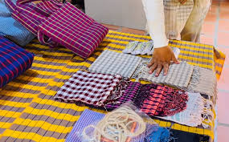
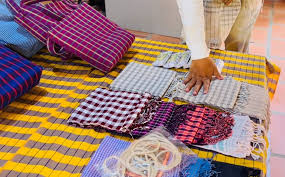

Traditional Khmer clothing is both beautiful and fuctional.The stylen have been shaped by Cambodia's hot tropiced climate,as well as its culture traditinals.Both men and women wear loose, lightweight clothing made of natural fibers and nature matial like cotton and intricate showcase the skill of Khmer weavers and tailors.The most well-know traditionalj garment is the sampot, a wrap-around lower grament worn bt both men and women.The sampot phamoong, worn by women, is a rectangular fabic wrapped around the waist and pinned at the top to creat skirt.Men wear the sampot kben, which is tucked in and held up by a belt called a krama.The sampot cames in colorful checked patterns or color floral silk brocades.
The sampot change kben is a full, ankle-leght skite.Tt's made of silk and decorated with floral or patterns.Women wear this for Special occasions like weddings or festivals. The sampot change phnom is a knee-leght cotton skite.It's more casual and worn for everyday activites.The sampot is wrapped around the waist and secured in place with a belt called a krama.


A kroma ia a checkered scarf that servers many purposes in Khmer clothing. Women use it as a belt to hold the sampot in place.Men wear the Kroma around their waist or neck.The kroma also has many practial uses,like as a towel,basket,or hammock.They come in red ,blueor green checkered patterns.

 

A sarong is a large of piece of patterned fabric used by Khmer people of all genders.It has many uses, such as. A wrap for Women to wear over a sleeveless top A towel for bathing.A blanket a hammock or mat to sit on.


The Anhkor shirt is a loose-fiting silk or cotton buttun-down shirt.It's worn by both more and women, and often paired with trousers or a sampot .Angkor shirt feature delicate embroidery, especially around the collar and cuffs.They are popular sovenirs for toerists visiting Cambodia.